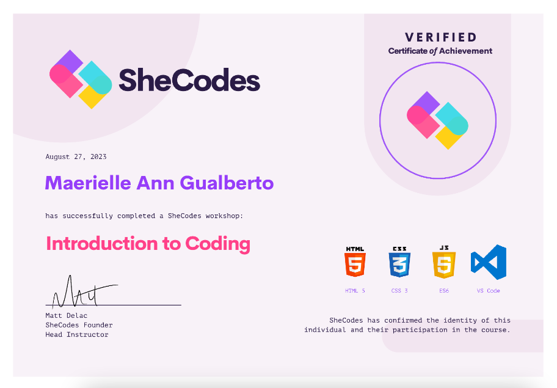
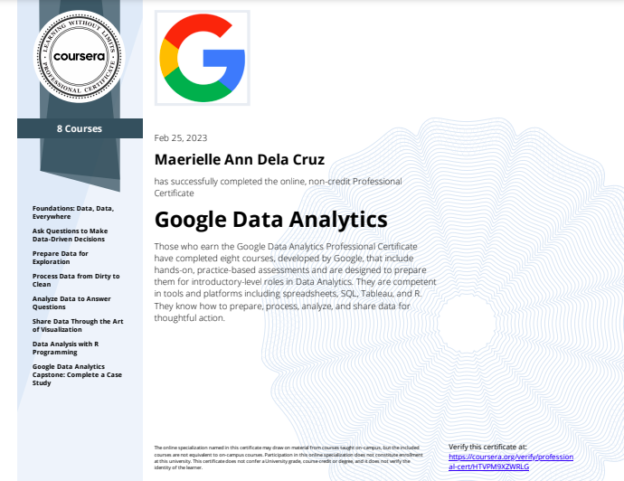

Maerielle Ann Gualberto
Web Developer
Summary
Enthusiastic web developer with expertise in HTML, CSS, and emerging
skills in JavaScript and Python. Committed to designing visually appealing
and user-friendly websites, with a passion for continuous learning and
creativity.
Education
-
Bachelor of Science in Information Technology - Mapua Malayan Digital
College
August 2023 - Present
-
Post_Graduate Diploma in Management - De La Salle University
March 2021 - July 2022
Work Experience
-
Forensic Document Examiner
-
Used digital forensic tools to detect forgeries in physical
documents with 90% accuracy.
-
Reduced document analysis time and cost by 50% by using fraud
detection software.
-
Generated comprehensive and accurate reports for legal or forensic
purposes.
-
Reports were successfully used as evidence in legal or forensic
cases.
Skills
- HTML5
- CSS3
- JavaScript
- Python
Certifications
- Introduction to Coding

- Google Data Analytics Professional Certificate
